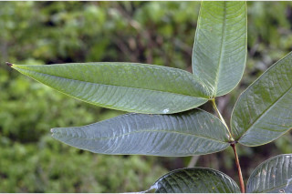
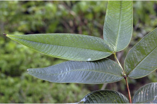
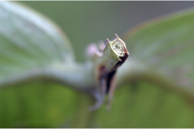
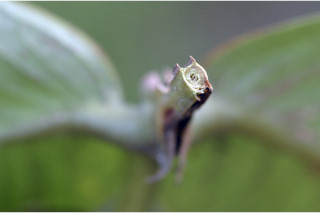

Large shrubs ca. 4 m tall.
ಅಂದಾಜು 4 ಮೀ. ಎತ್ತರದವರೆಗೆ ಬೆಳೆಯುವ ದೊಡ್ಡ ಗಾತ್ರದ ಪೊದೆಗಳು.
ഏതാണ്ട് 4 മീറ്റര് ഉയരമുളള വന് കുറ്റിച്ചെടികള്.
பெரிய குத்துசெடிகளாக 4 மீ. உயரம் வரை வளரக்கூடியது.
Bark grey, flaky.
ತೊಗಟೆ ಬೂದು ಬಣ್ಣದಲ್ಲಿದ್ದು ಚಕ್ಕೆ ರೂಪದಲ್ಲಿರುತ್ತವೆ.
അടര്ന്നിളകുന്ന, ചാരനിറത്തിലുളള, പുറംതൊലി.
மரத்தின் பட்டை சாம்பல் நிறமானது, பெரிய செதில்களாக காணப்படுபவை.
Branchlets stout, strongly 4-angled with narrow wings.
ಕಿರುಕೊಂಬೆಗಳು ದೃಢವಾಗಿದ್ದು 4-ಪ್ರಬಲವಾದ ಕೋನಗಳನ್ನುಹೊಂದಿದ್ದು ಸಂಕುಚಿತವಾದ ರೆಕ್ಕೆಗಳ ಸಮೇತವಿರುತ್ತವೆ.
നേര്ത്ത ചിറകുകളുളള, കനത്തില് ചതുഷ്ക്കോണമായിട്ടുളള, ദൃഢമായ, ഉപശാഖകള്.
சிறிய நுனிக்கிளைகள் தடித்தவை, நான்கு கோணங்களுடையது மற்றும் தண்டு குறுகிய இறகு போன்ற அமைப்புடையது.
Leaves simple, opposite, decussate; petiole sessile or subsessile (ca. 0.2 cm long), glabrous; lamina 20-40 x 6-14 cm, long lanceolate and tapering into acuminate apex, base rounded or subcordate, margin entire, thickly coriaceous; midrib canaliculate above; secondary_nerves strong, parallel, and joining into intramarginal_nerve, ca. 24 pairs; tertiary_nerves broadly reticulate.
ಎಲೆಗಳು ಸರಳವಾಗಿದ್ದು, ಕತ್ತರಿಯಾಕಾರದ ಅಭಿಮುಖ ಜೋಡನಾ ವ್ಯವಸ್ಥೆಯ –ಲ್ಲಿರುತ್ತವೆ;ಎಲೆಗಳು ತೊಟ್ಟುರಹಿತವಾಗಿರುತ್ತವೆ ಅಥವಾ ಉಪತೊಟ್ಟುರಹಿತವಾಗಿರುತ್ತವೆ (ಉಪ ತೊಟ್ಟುಗಳು ಅಂದಾಜು 0.2 ಸೆಂ.ಮೀ. ಉದ್ದವಿರುತ್ತವೆ) ಮತ್ತು ರೋಮರಹಿತ -ವಾಗಿರುತ್ತವೆ;ಪತ್ರಗಳು 20 – 40 X6 1 4 ಸೆಂ.ಮೀ. ಗಾತ್ರ ಹೊಂದಿದ್ದು ಭರ್ಜಿಯ ಆಕಾರದಲ್ಲಿದ್ದು ಹಂತ ಹಂತವಾಗಿ ಕಡಿದಾಗುತ್ತಾ ಹೋಗುವ ಕ್ರಮೇಣ ಚೂಪಾದ ತುದಿ ಮತ್ತು ದುಂಡಾದ ಅಥವಾ ಉಪ-ಹೃದಯಾಕಾರದ ಬುಡ ಹೊಂದಿರುತ್ತವೆ;ಅಂಚು ನಯವಾಗಿರುತ್ತದೆ; ಪತ್ರಗಳು ದಪ್ಪನೆಯ ತೊಗಲನ್ನೋಲುವ ಮಾದರಿಯಲ್ಲಿರುತ್ತವೆ; ಮಧ್ಯನಾಳ ಮೇಲ್ಭಾಗದಲ್ಲಿ ಕಾಲುವೆ ಗೆರೆ ಸಮೇತವಿರುತ್ತದೆ; ಎರಡನೇ ದರ್ಜೆಯ ನಾಳಗಳು ಅಂದಾಜು 26 ಜೋಡಿಗಳಿದ್ದು ದೃಢವಾಗಿರುತ್ತವೆ ಮತ್ತು ಸಮಾಂತರ -ದಲ್ಲಿದ್ದು ಅಂತರ ಅಂಚಿನ ನಾಳಗಳನ್ನು ಸೇರಿಕೊಳ್ಳುತ್ತವೆ ;ಮೂರನೇ ದರ್ಜೆಯ ನಾಳಗಳು ವಿಶಾಲ ಜಾಲ ಬಂಧ ನಾಳ ವಿನ್ಯಾಸದಲ್ಲಿರುತ್ತವೆ.
ലഘുവായ, ഇലകള്, സമ്മുഖ, ഡെക്കുസേറ്റ് ക്രമത്തിലാണ്; അരോമിലമായ, അവൃന്തമോ ഉപഅവൃന്തമോ ആയ (ഏതാണ്ട് 0.2 സെ.മീ നീളം) ഇലഞെട്ട്; പത്രഫലകത്തിന് 20 സെ.മീ മുതല് 40 സെ.മീ വരെ നീളവും 6 സെ.മീ മുതല് 14 സെ.മീ വരെ വീതിയും, ദീര്ഘാഗ്രത്തില് അവസാനിക്കുന്ന നീളന് കുന്താകൃതിയാണ്, പത്രാധാരം വൃത്താകാരമോ ഉപഹൃദയാകാരമോ ആണ്, അരികുകള് അവിഭജിതമാണ്, കനത്ത ചര്മ്മിലമാണ്; മുഖ്യസിര മുകളില് ചാലുളളതാണ്; അന്തര് സീമാന്ത സിരകളുമായി ചേരുന്ന, ദൃഢമായ, ഏതാണ്ട് 24 ജോഡി, സമാന്തരമായ ദ്വിതീയ ഞരമ്പുകള്; ത്രിതീയ ഞരമ്പുകള് വീതിയേറിയ ജാലിതമാണ്.
இலைகள் தனித்தவை, எதிரடுக்கமானவை, குறுக்குமறுக்குமானவை; இலைகாம்பு அற்றது அல்லது மிகச்சிறிய காம்புடையது (0.2 செ.மீ. நீளமானது), உரோமங்களற்றது; இலை அலகு 20-40 X 6-14 செ.மீ., நீண்ட ஈட்டி வடிவம் மற்றும் நீண்ட குறுகிய அதிக்கூரிய நுனியுடையது, அலகின் தளம் வட்டமானது அல்லது சிறிய இதய (கார்டேட்) வடிவானது, அலகின் விளிம்பு முழுமையானது, மெல்லிய கோரியேசியஸ், மையநரம்பு அலகின் மேற்பரப்பைவிட பள்ளமானது; இரண்டாம் நிலை நரம்புகள் ஒன்றுக்கொன்று இணையானவை, மற்றும் விளிம்பில் இண்ட்ராமார்ஜினல் நரம்புடன் (விளிம்பு நரம்பு) இணைந்தவை, 24 ஜோடிகள்; மூன்றாம் நிலை நரம்புகள் அகன்ற வலைப்பின்னல் போன்றது.
Inflorescence axillary, lax pedunculate, umbellate cymes; peduncle 6-12 cm long, stout, 4-angled; flowers many, bluish violet.
ಪುಷ್ಪಮಂಜರಿಗಳು ಅಕ್ಷಾಕಂಕುಳಿನಲ್ಲಿನ, ವಿರಳವಾದ ಹಾಗೂ ವೃಂತವುಳ್ಳ ಪೀಠಛತ್ರ ಮಾದರಿಯ ಮಧ್ಯಾರಂಭಿ ಮಾದರಿಯವು;ವೃಂತಗಳು 6ರಿಂದ 12 ಸೆಂ.ಮೀ.ಉದ್ದವಿದ್ದು ದೃಢವಾಗಿದ್ದು 4-ಕೋನಯುಕ್ತವಾಗಿರುತ್ತವೆ;ಹೂಗಳು ಅನೇಕವಿದ್ದು ನೀಲಿ ಮಿಶ್ರಿತ ನೇರಳೆಬಣ್ಣ ಹೊಂದಿರುತ್ತವೆ.
പൂങ്കുലകള്, കക്ഷങ്ങളിലുണ്ടാകുന്ന, തണ്ടുളള, വിടര്ന്ന ഛത്രമഞ്ജരി സൈമുകളാണ്; ചതുഷ്ക്കോണത്തിലുളള, ദൃഢമായ പൂങ്കുലഞെട്ടിന് 6 സെ.മീ മുതല് 12 സെ.മീ വരെ നീളം; ധാരാളമായുണ്ടാകുന്ന പൂക്കള്ക്ക് നീലകലര്ന്ന വയലറ്റ് നിറമാണ്.
மஞ்சரி இலைக்கோணங்களில், நெருக்கமற்ற மஞ்சரி காம்புடன் காணப்படும் அம்பல்லேட் சைம்; மஞ்சரிக்காம்பு 6-12 செ.மீ. நீளமானது, தடித்தது, நான்கு கோணங்களுடையது; மலர்கள் எண்ணற்றவை, நீலம் கலந்த ஊதா நிறமானது.
Berry, globose, 0.8-1.2 cm diameter, crowned by calyx limb, dark purple when ripe; seed 1.
ಬೆರ್ರಿಗಳು ಗೋಳಾಕಾರದಲ್ಲಿದ್ದು 0.8 ರಿಂದ 1.2 ಸೆಂ.ಮೀ. ವ್ಯಾಸ ಹೊಂದಿರುತ್ತವೆ ಮತ್ತು ತುದಿಯಲ್ಲಿ ಪುಷ್ಪಪಾತ್ರೆಯ ವಿಸ್ತ್ರುತ ಭಾಗ ಸಮೇತವಿರುತ್ತವೆ;ಕಾಯಿಗಳು ಮಾಗಿದಾಗ ಕೆನ್ನೀಲಿ ಬಣ್ಣದಲ್ಲಿದ್ದು ಒಂದು ಬೀಜವನ್ನೊಳಗೊಂಡಿರುತ್ತವೆ.
ഒറ്റവിത്തുളള കായ, ബാഹ്യദളത്തിന്റെ പാദത്താല് അലംകൃതമായ, 0.8 സെ.മീ മുതല് 12 സെ.മീ വരെ വ്യാസമുളള, മൂക്കുമ്പോള് ഇരുണ്ട ഊതനിറത്തിലുളള, ഗോളാകാര ബെറിയാണ്.
முழுச்சதைகனி (பெர்ரி), கோளவடிவானது, 0.8-1.2 செ.மீ. குறுக்களவுடையது, புல்லி இதழ்கள் கிரீடம் போன்றமைந்தவை, கனியும் போது கரும்ஊதா நிறமடைகிறது; விதை ஒன்று.
 



 
